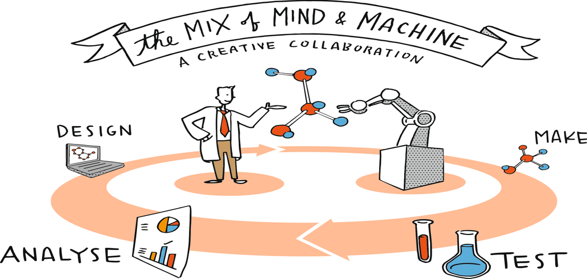

About Hybrid Recommendation for Drug Discovery
Hybrid Recommendation for Drug Discovery is a state-of-the-art machine learning model designed to aid in the discovery of new drugs. It works by taking a set of numerical values as inputs, which represent various properties of potential drug compounds. These could be physical or chemical properties, such as molecular weight, solubility, or the presence of certain functional groups.
The 'Hybrid' in its name refers to the combination of different types of recommendation techniques that this model uses. Specifically, it combines content-based techniques, which use features of the compounds, with collaborative filtering techniques, which use past interactions between different compounds and experimental results. By combining these techniques, the model can provide a more complete and accurate view of potential drug candidates.
This approach can greatly speed up the process of drug discovery by allowing researchers to explore a wider space of possibilities and direct their efforts more efficiently. As more data is collected, the model can improve and provide even more accurate recommendations. The ultimate goal is to aid in the identification of new, effective drugs that can then be taken forward into clinical trials and, ultimately, used to treat patients.